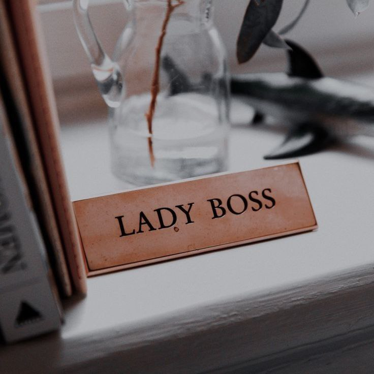
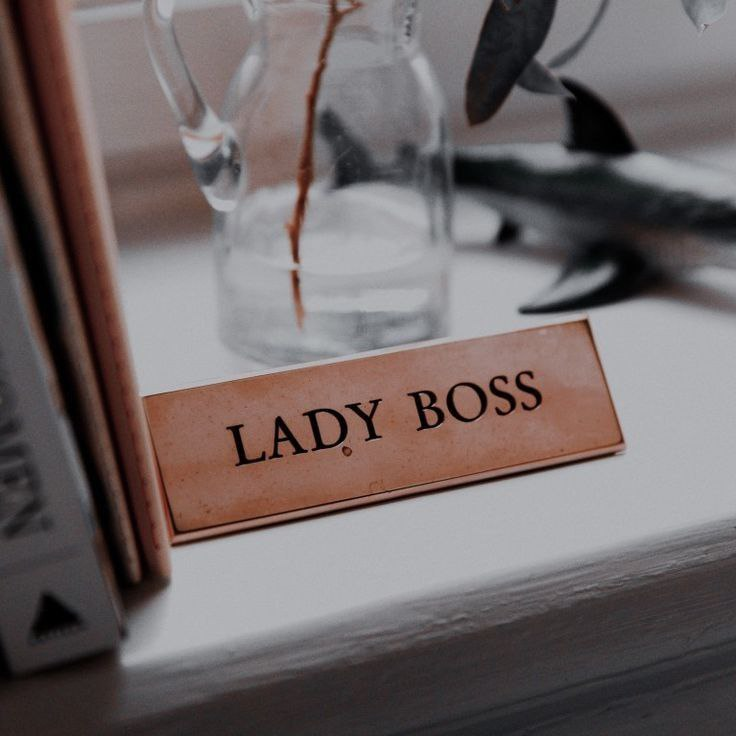

2009-2014
I am studing at primary school Sekolah Kebangsaan Sungai Embak from Year 1 until Year 6.
I am studing at primary school Sekolah Kebangsaan Sungai Embak from Year 1 until Year 6.
I am continuing my study at secondary school which is Sekolah Menengah Kebangsaan Sultan Yahya Petra (2). I am study at that scool from Form 1 until Form 6. After SPM, I took STPM at the same school.
I am continuing my study at University Technology Mara Campus Kota Bharu.
I want to build a business base on food and beverages. My dream want to have a restaurant that serve malay food.

 
